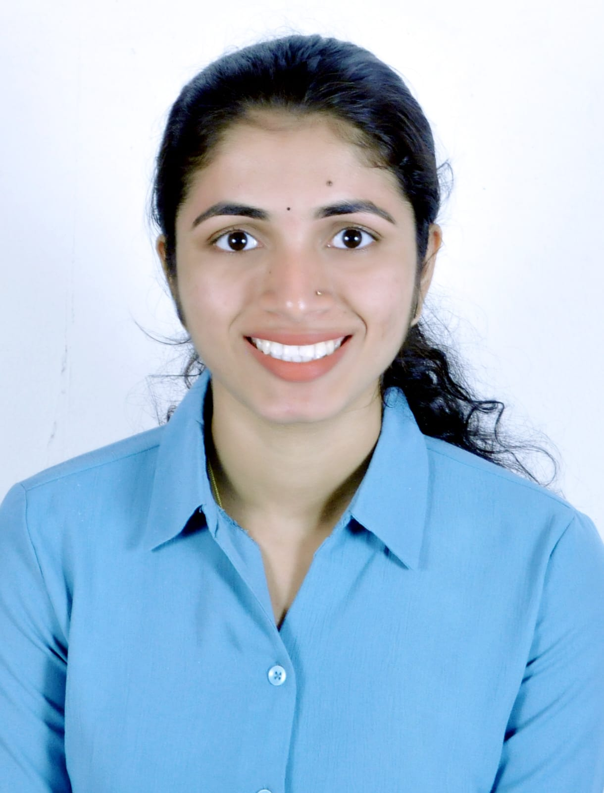

Kuchikkad House, Manjeshwara (Post) Kasargod, Kerala - 671323
Mobile: +91 7012825611
Email: shreyashetty205@gmail.com
LinkedIn:To secure a challenging position in an organization where I can apply my analytical and problem-solving skills to support strategic goals and deliver innovative solutions. I aim to continuously learn, adapt and grow while contributing to organizational success.
B.E Computer Science and Engineering
Srinivas Institute of Technology, Mangalore
2022 – Present | 8.9 CGPA
Pre-University
Parijnan PU College, Mangalore
2020 – 2022 | 95%
SSLC
Bhagavathi English Medium School, Mangalore
2019 – 2020 | 90%
Languages: C, Python, Java
Web Development: HTML, CSS, JavaScript
Database: MySQL, MongoDB
Operating System: Windows, Linux
Tools: GitHub, Visual Studio Code, Canva
Project Management
Communication Skills
Teamwork
Leadership
Time Management
Website for Recipe Finder
Developed an interactive web application using HTML, CSS and JavaScript.
Designed a JSON-based database for storage and retrieval.
Network Anomaly Detection using ML
Developed ML framework using RNN, KNN and LSTM.
Improved detection accuracy and reduced false positives.
Implemented real-time packet capture using Scapy.
Cyber Security – AICTE (10 weeks)
AI-ML – AICTE (10 weeks)
Python Full Stack Developer – AICTE (10 weeks)
IT Specialist - Cloud Computing (Certiport)
NoSQL MongoDB – IBMCE
Data Structure using C Programming – Ethnotech Academy
Data Analytics using Excel – Ethnotech Academy
Advanced Java Programming – Ethnotech Academy
Database using SQL – Ethnotech Academy
HTML5 Application Development – Ethnotech Academy
English
Kannada
Hindi
Malayalam
Tulu
Published research paper "Recipe Finder" in JETIR, July 2025
Participated in Hackathon
NSS Volunteer Activities
District Level Recitation Competition (2017)
I hereby declare that the information furnished above is true to the best of my knowledge.
(Shreya)